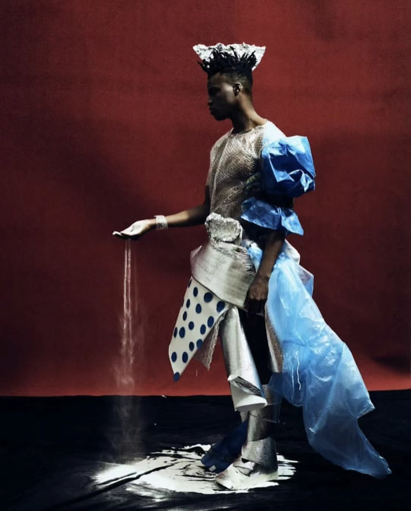
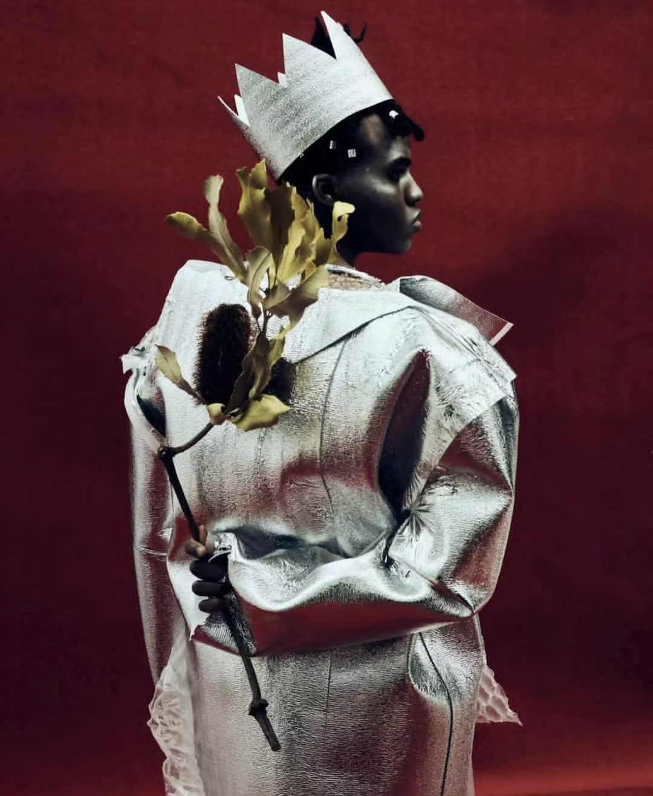
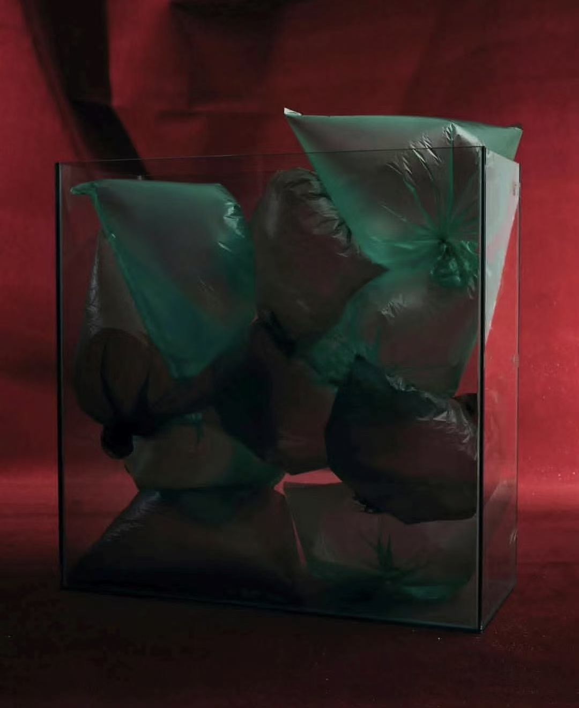
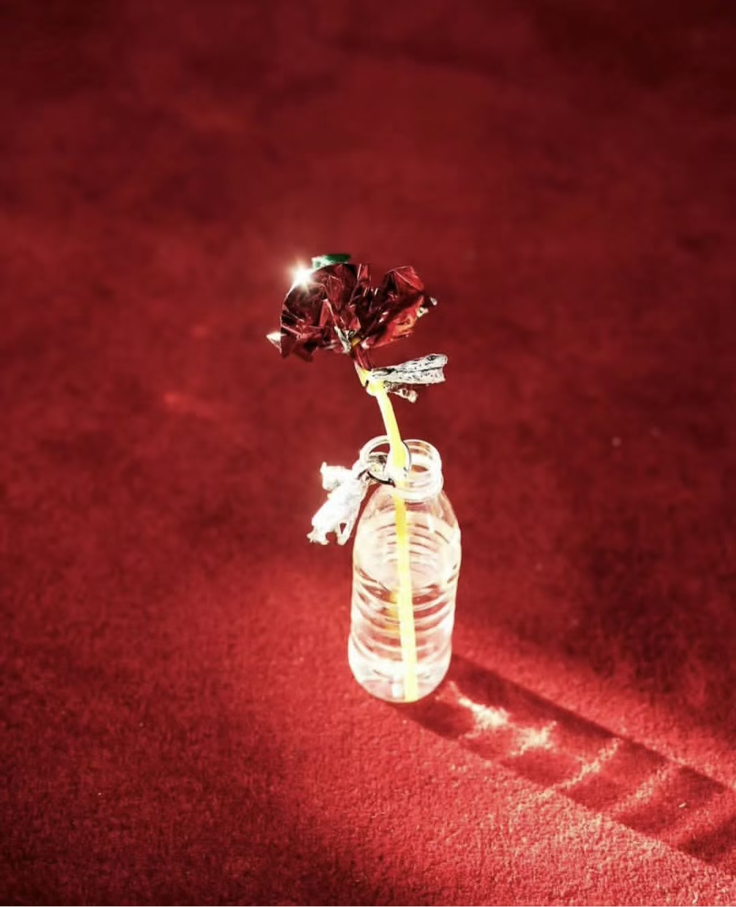
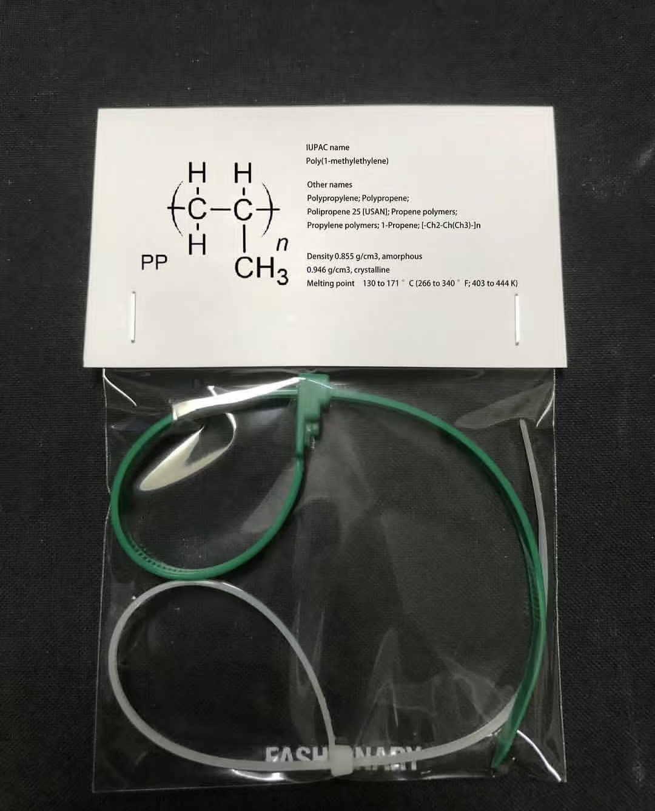
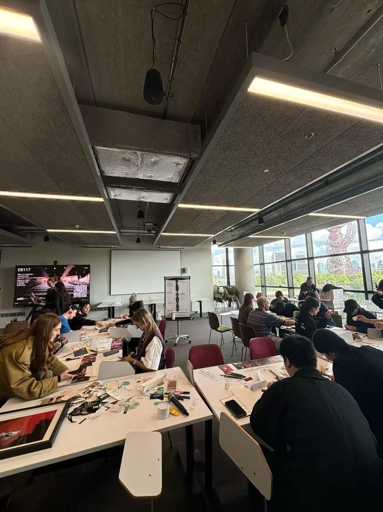
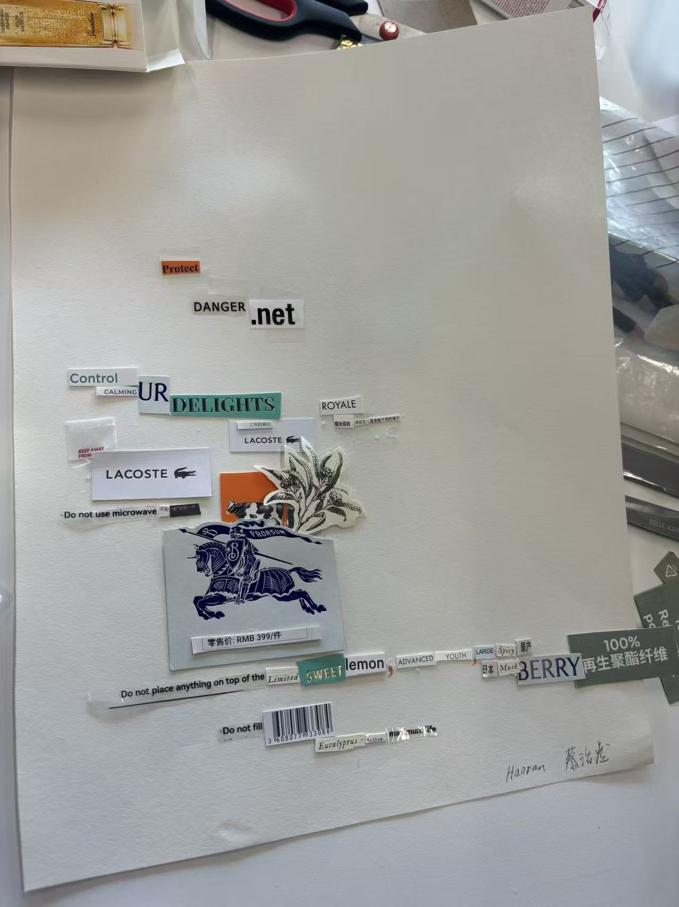
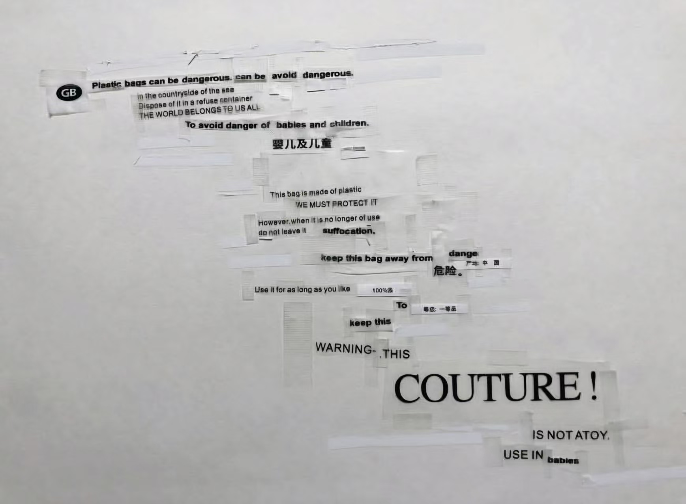
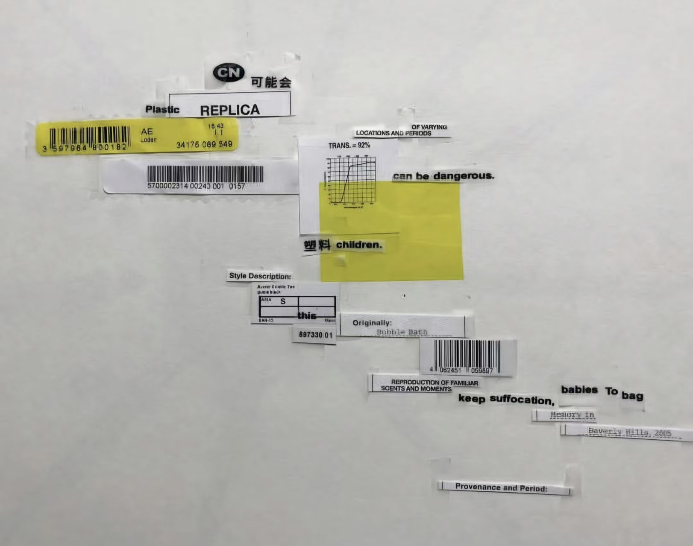

Fashion Poetry Collage Workshop
Plastic Anxiety
A research-led visual experiment on fast fashion, luxury branding, garment labels, washing tags, and the plastic residue hidden inside contemporary clothing systems.






01 / Research + Workshop Method
Workshop Fashion Poerty
Feel free to join our Fashion Poetry Collage workshop as part of the exhibition programme. We'll explore fashion globalisation and its impact on environmental and social systems. Participants who take part in the creative process will receive a postcard featuring the artist's work.
02 / Collage Lab Preview
Online College Lab
The lab is presented as a standalone participatory space. Visitors leave the research page, enter a dedicated board, cut material from the workshop sheet or their own uploaded labels, and export a social-format collage.
Enter Collage Lab

